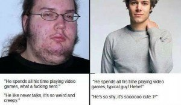

Troy is a game veteran of a decade's standing, and a lover of women, literature, travel and freedom. He is also the author of The Seven Laws of Seduction. Visit his website at Troy Francis.


As a man looking to meet and attract women it is imperative that you internalise and understand this fundamental fact about sexual market value—if she’s young (between 18 and 30), slim, and even a little bit attractive, her SMV outstrips yours significantly.
For this reason, the “playing field” is not even. Just because you were brought up in the same town, are of a similar social demographic, and are even of a comparable level of attractiveness, don’t imagine for a moment that getting with her is a foregone conclusion. A young, pretty girl has countless options and you must develop strategies to get ahead of the pack to be in with a chance with her.

Game writers have long used the terminology of economics to discuss relations between the sexes for the simple reason that it is both accurate and relevant. Make no mistake, each of us—men and women—is a product in the market with a value that can go up and down over time, or depending on buyer, location, and a whole host of other factors.
When you walk over to a woman to introduce yourself she will determine your value in relation to hers in a matter of seconds. If she decides for whatever reason that your SMV is equal or less than hers then she will reject you as a matter of course. It is only when she considers your value higher that she will consider sleeping with you.
For this reason you must always ensure that you demonstrate as much value as you can in every interaction. Put very simply, if you’re a schlub like in the picture above then you ain’t getting with Adriana Lima anytime soon, however many clever lines you may have memorised from the internet.
If we accept that the interplay between the sexes forms a marketplace, then we must also accept that each person in it is a product with a value, both perceived and actual. The way this value is determined differs considerably for each of the sexes.
Let’s be honest – women’s SMV is predicated almost entirely on the way that they look. This isn’t misogyny as much as an honest reflection of how most men think. And between the ages of 18 and 30 girls don’t even have to be that facially attractive. If they are in shape then that is usually enough to ensure that they will have a cohort of thirsty men liking their pictures on Facebook and following them on Instagram.
Let’s be honest—it really doesn’t matter much to us men how good a girl’s job is. If she’s hot we’ll want to sleep with her. If she isn’t then she won’t. And we’re not swayed by fame either. I would sleep with Ariana Grande if she worked in McDonalds, but I wouldn’t sleep with Meghan Trainor just because she is on MTV.
Men’s SMV is more complex and changeable. Of course, men too are judged on their looks. Height also plays a big part. When you get into game you have to realise that men start from different baselines. If you’re an ugly dude, then tough luck—the market doesn’t care. You’ll just have to accentuate your other, positive traits and work even harder at approaching in high volume than other guys. If you are short then you have to accept that this too is detrimental to your SMV and make sure that you compensate in other ways (and I speak as a man just shy of six feet tall—my success level has been great, but I’m certain it would have been even better had I been taller.)

In both cases, you may also have to accept that your prospective buyers (i.e. women) won’t cut you as much slack as they would guys that they are more immediately attracted to. Sorry—it’s a bitter pill to swallow, but there it is. What you must do is be smart, change aspects of yourself that you can, and approach as many targets as possible to improve your odds in the game.
Physical attributes you can’t change (or not easily). But the good news is that almost every other aspect of a guy’s SMV is manipulatable, and this manipulation is really at the heart of what we call game. Your body language, your vocal projection, what you wear, the way you groom yourself, how you earn a living, what your physique is like, how you conduct yourself socially—all these are mutable and can be altered with a bit of effort. You may also find that your SMV varies geographically. A guy who can’t get a BJ from a hideous troll in Atlanta could well be the toast of the town in Bangkok.
But wherever you are in the world, the most attractive trait in a man as far as women are concerned is social dominance. If you can communicate social and interpersonal dominance through your actions and behaviours then you will naturally have a higher SMV (and thus be more likely to get laid) than a man who can’t.
Therefore, a man who is not classically good-looking can nevertheless radically enhance his SMV. For that we should all be very grateful.
The point of all of this is that you have to be aware of your SMV relative to others around you and be prepared to put in the work to improve it. You have to look at yourself honestly and work out what baseline you’re coming from. If you’re not good-looking, or your style is bad, or your social skills are poor, then accept that you are less well situated than some other guys and that you’re going to have to put in extra effort to compete.
Too many guys I come into contact with seem to think that by learning a few game tricks from the internet that they will be able to meet and attract supermodels. It doesn’t work like that. Becoming good with women is a holistic process. In many cases you have to start from the ground up, taking a good long hard look at the strengths and weaknesses in all areas of your presentation and your life. You have to assess what could be bettered with forensic honesty and attention to detail and then put in place concrete achievable plans to improve in these areas. You must then take stock regularly, considering your progress each time and deciding whether tweaks to your process are appropriate.
Yes, you should come to Return of Kings and other sources to read articles containing game advice. In fact, hearing what others have done before you is invaluable in terms of inspiration and instruction. But ultimately you should realise that “game”—in terms of things to say to women and techniques to use—is really only the tip of the iceberg. The long “game” is about raising your sexual market value relative to those of the girls you desire—and there are no shortcuts for doing so. Get your grooming sorted, get your style sorted, start lifting and make sure that your social abilities are appropriate outside of a Minecraft internet forum.
Only brutal honesty, application, and hard work will pay off in the end.
Read More: How Clear Should You Announce Your Sexual Intentions With Women You’re Attracted To?